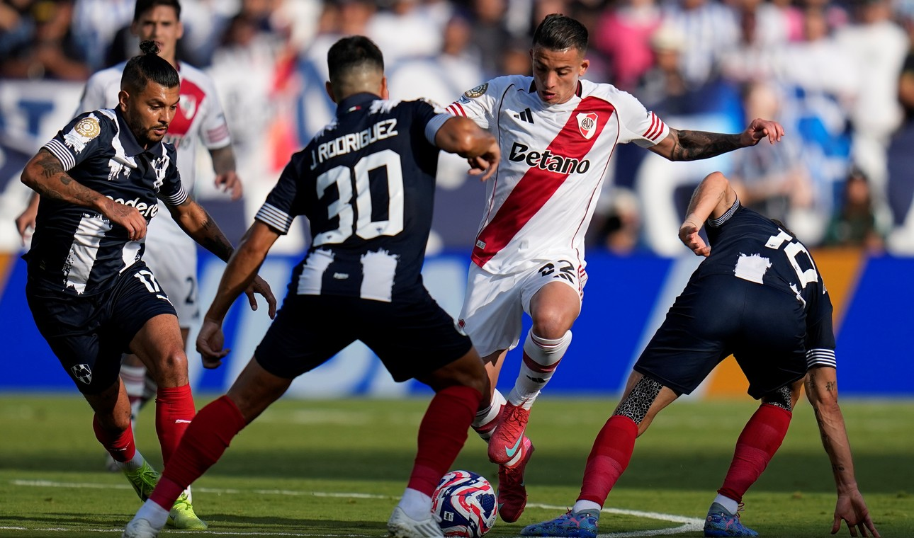

Un River erratico empató sin goles contra Monterrey
River no logró romper el cero ante Monterrey en un duelo intenso y con dominio repartido. El equipo de Gallardo mostró su mejor versión sobre el cierre, pero la falta de eficacia y la expulsión de Castaño complican el panorama de cara al cruce decisivo con el Inter de Milán.
Contra equipos mexicanos, los de Nuñez jugaron 18 veces, de las cuales ganaron 5 veces, empataron en 8 ocasiones y perdieron en 5. En cuanto a Monterrey, esta es la primera vez que se enfrentan de forma oficial.
Los primeros minutos fueron parejos sacando las intenciones del Millonario sin acercamientos claros al arco rival algunas contras del conjunto mexicano que tuvieron a Franco Armani como protagonista.
Ya en los últimos 5 minutos del primer tiempo River se desató y comenzó a ser mas con la pelota, mostrándose superior a su rival y llegando al arco de Andrada con más contundencia. En este tramo del partido River generó las ocasiones más claras ya que Gallardo le dio mas libertades a Mastantuono dentro del esquema haciendo que se pueda mostrar y destacar con pases claves a sus compañeros y acciones peligrosas.
En el segundo tiempo, la dinámica fue la misma que la del final de la segunda parte. El conjunto de Marcelo Gallardo recuperó alto en campo rival y le “cascoteó el rancho” de forma permanente a Rayados pero no estuvo fino en la definición.
Además, el 90+1’ Kevin Castaño salió expulsado por segunda amarilla y se suma a Meza, Perez y Galoppo como parte de los que se perderán el partido ante Inter de Milán. Esto obliga a Marcelo Gallardo a reorganizar la mitad de la cancha para el último partido de la fase de grupos.
Este resultado beneficia al compilado mexicano ya que define el grupo contra Urawa Red Diamonds, el rival a priori más debil de los 4. River por su parte queda complicado dd cara a la clasificación ya que debe ganarle al Interzonale si o si y esperar un resultado favorable entre los mexicanos y los japoneses.